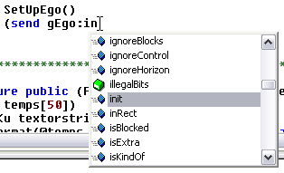
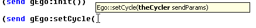
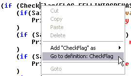
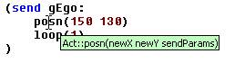
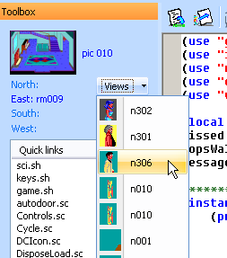

Script browsing information can be turned on or off (along with its related settings) in the Preferences dialog.. It is off by default.
Script browsing is a powerful feature that analyzes the scripts and header files in your project, and will be able to provide auto code completion, and contextual information about objects in your script. This only works with home-made games, as it requires the source code (*.sc) to work. The browse information is compiled when you open the game. The progress can be seen in the status bar. It will show you any errors. Until these errors are corrected, browse information may be incomplete and features which depend on it may not work. To force SCICompanion to recompile the browse information for a particular script after you fix erros, just save the script again.
Script browsing may be taxing on your computer's CPU. If typing is sluggish, turn it off (or just disable auto code completion).
As you type, SCI Companion will suggest words (methods, objects names, variable names, etc...) for completion. Hit Enter to accept the suggestion, or the up and down arrow keys to choose another suggestion.
When you begin a method or procedure call, an infotip will appear with that method's signature. The current parameter will appear in bold.

If you right-click on an object, method call, variable, or defined value, the context menu will provide an option to take you to the spot where this item is defined or declared (which may be in another script file, or header file).


At the top of the script editor is a combobox that lists all the functions and objects in the current script file. It displays the name of the function or object where the cursor is currently located. You can use this list to quickly jump to another function in the script.

At the top of the script toolbox are links to resources relevant to the current script. Here you will find the link to the pic resource (if this is a room), the views used in any Prop or Act instances, and links to the scripts of any rooms to the north/east/south/west. If the resource is already being edited, it will switch you to that resource. Otherwise, it will open the appropriate editor for that resource.

Note: due to change in the architecture, infotips and auto code completion are no longer available. The plan is to re-enable these features for the c++ syntax only in the future.
You may notice auto code completion not working for newly created functions. SCI Companion only updates its database of objects and functions when the script file when it is saved. If you just added a procedure or object instance (e.g. a new Prop) to a script, you need to save the script before it will appear in the code completion dropdown.
SCI Companion regenerates its browse database each time you load a game. The first time you invoke the script editor for a game project, you may notice a short delay before things like code completion will work. This is because SCI Companion is scanning all the script and header files in your project, and building the database. This should only take a few seconds (you may notice your CPU in use).
SCI Companion may not recognize certain styles of code in the same manner as the script compiler does. So it is possible that code that compiles successfully will confuse SCI Companion. If you think browse information is not working properly but should, submit a bug report and include the offending SCI script (see the Help menu in SCI Companion).